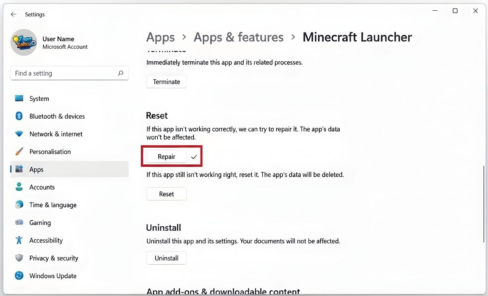
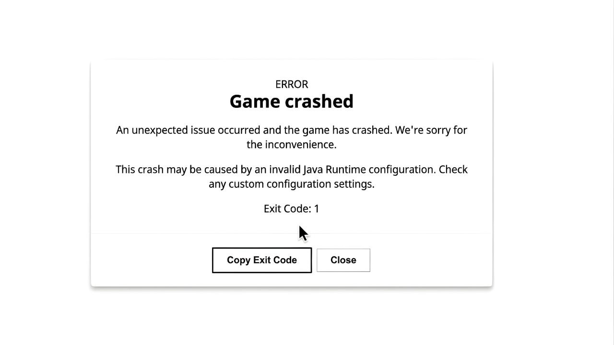
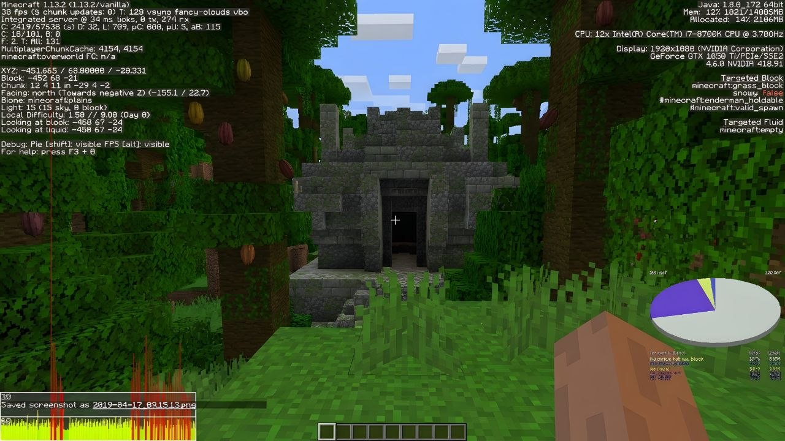
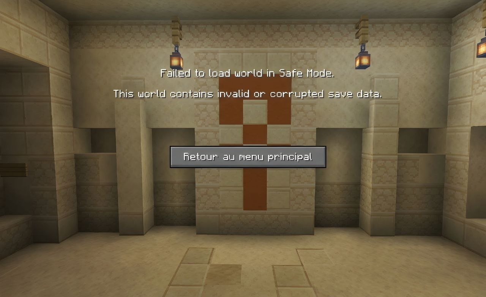
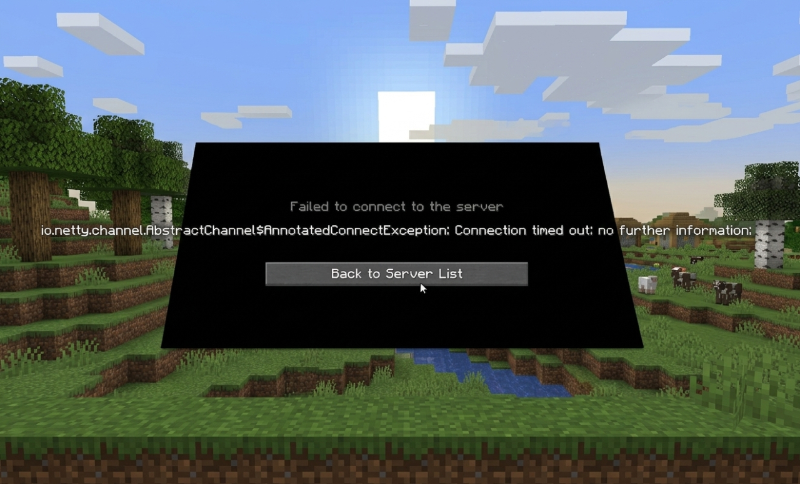
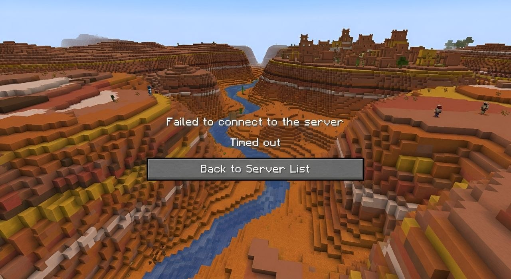
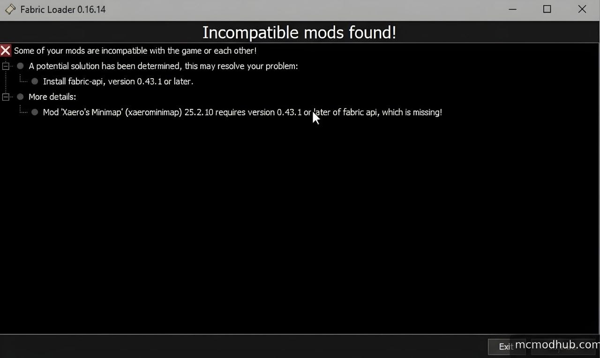

Have you opened Minecraft and found that it will not start? Maybe the game keeps crashing, runs very slowly, refuses to connect to a server, or gets stuck while loading a world. These problems can be frustrating, especially when you just want to play.
The good news is that many Minecraft problems have simple causes. An outdated game, a damaged mod, a weak internet connection, low storage space, or an incorrect setting can stop the game from working properly. The right fix depends on the problem and the device you use.
This guide covers 20 common Minecraft problems across Java Edition and Bedrock Edition, including PC, mobile, and console situations. Try the basic checks first, then follow the steps for the problem you see. Menu names can differ slightly between game versions and devices.
Before You Start: Quick Checks
Before changing advanced settings, do these simple checks. They can solve many small problems without risking your worlds or game files.
- Close Minecraft and the launcher, then restart your device.
- Check whether Minecraft and your launcher are fully updated.
- Make sure your device has free storage space.
- Check your internet connection if the problem involves signing in or multiplayer.
- Confirm whether you are using Java Edition or Bedrock Edition. Their settings, files, and troubleshooting steps are not always the same.
- Write down the full error message or take a screenshot before changing anything.
Important: Back up your worlds before reinstalling the game, changing game folders, removing files, or testing unfamiliar mods. Do not delete the Minecraft folder just to try a quick fix.
1. Minecraft Launcher Won't Open
If the Minecraft Launcher does not open, freezes, or closes immediately, the launcher itself may need an update or repair. This does not always mean the Minecraft game files are damaged.
Try these fixes:
- Restart your computer and open the launcher again.
- Install available updates for the launcher through the official Microsoft Store or the official Minecraft website, depending on how you installed it.
- On Windows, open Settings, go to Apps, find Minecraft Launcher, and use the available Repair option if Windows provides one. Try Reset only after understanding that it may remove local app data.
- Check whether your security software has blocked the launcher. Only allow the official app if you trust the installation; do not turn off your antivirus completely.
- If the launcher still fails, reinstall it from an official source. Make sure your worlds are backed up first.
If the launcher opens but the game does not, continue to the next problem.
2. Minecraft Won't Launch
Sometimes the launcher opens normally, but clicking Play does nothing. The game may briefly appear and then close. A wrong game version, a mod conflict, or a problem with the selected installation can cause this.
How to fix it:
- Open the launcher and check that the selected installation or game version is the one you want to run.
- If you use mods, try starting a clean, unmodified game profile. Do not delete your mod files; temporarily move them to a backup folder.
- Close other game launchers or programs that may be using system resources.
- Update your graphics driver from your computer or graphics-card manufacturer's official support page.
- Look at the launcher's error message or game log. It may identify a missing file, incompatible mod, or Java problem.
For Java Edition, use the Java runtime managed by the official launcher unless you have a clear reason to configure a different one. Randomly installing several Java versions can create more problems.

3. Minecraft Crashes on Startup
A startup crash means Minecraft begins loading but closes before you reach the main menu. The cause may be an outdated graphics driver, incompatible software, a damaged configuration, or a mod that does not match your game version.
Try this order:
- Restart the device and test the game without mods, shaders, or custom resource packs.
- Install the latest stable graphics driver that supports your hardware.
- Check that your operating system meets the requirements for your Minecraft edition.
- Temporarily test a fresh game installation or profile without deleting your original worlds.
- Read the crash report or log file. The first clear error near the end of the report is often more useful than the final line alone.
If the crash started immediately after adding a mod or shader, remove that new addition first. It is often the quickest way to identify the cause.
4. How to Fix Minecraft Exit Code 1
Exit Code 1 is a general Java Edition launch failure. It does not point to one single cause. A mod conflict, an incorrect Java setup, a broken game profile, or a graphics-related issue may be responsible.
Steps to try:
- Launch a clean vanilla profile with no mods. If it works, check your mods one by one.
- Make sure every mod matches your Minecraft version and mod loader, such as Fabric or Forge. Do not mix files made for different loaders.
- Use the Java runtime recommended by the launcher for that game version. If you manually selected a Java path, restore the default setting and test again.
- Update your graphics driver and restart the computer.
- Open the latest log or crash report and look for a named mod, missing library, or clear Java error.
Changing Java versions at random is not a reliable fix. First test without mods, because that quickly separates a mod problem from a basic launch problem.

5. Minecraft Is Stuck on the Loading Screen
If the loading bar stops moving or the game stays on the Mojang or world-loading screen, it may be processing a large world, loading a resource pack, or getting stuck because of a damaged file.
- Wait a short time if this is the first launch after an update or if the world is very large.
- Close the game normally if it remains frozen, then restart the device.
- Try opening another world. If only one world gets stuck, the issue may be inside that save.
- Disable recently added resource packs, shaders, or add-ons after backing up the world.
- Check available memory and storage. Very low free space can interrupt loading.
Do not repeatedly force-close the game while it is saving a world. Give it time to finish whenever possible.
6. Minecraft Has Low FPS
Low FPS means the game displays fewer frames each second, so movement looks less smooth. This can happen when graphics settings are too demanding for your hardware or when the game uses the wrong graphics processor on a laptop.
Try these settings:
- Lower Render Distance and Simulation Distance.
- Reduce graphics quality, particles, clouds, and other visual effects.
- Close heavy programs and browser tabs while playing.
- On a laptop, connect the charger and select an appropriate performance mode.
- If your device has both integrated and dedicated graphics, check the operating system's graphics settings to see which GPU Minecraft is using.
- Update the graphics driver using the hardware maker's official software or support site.
More RAM does not automatically mean more FPS. The processor, graphics hardware, game settings, and world size also matter.

7. Minecraft Keeps Lagging or Stuttering
Lag can mean different things. If the picture freezes or stutters, the device may be struggling to render the game. If other players move strangely or actions take a long time on a server, the problem may be network delay.
For visual stuttering: lower render distance, close background apps, check device temperature, and make sure the game is installed on a healthy drive with enough free space.
For multiplayer delay: use a stable connection, pause large downloads, move closer to your Wi-Fi router, or test with an Ethernet cable if possible. A server that is overloaded can also cause lag, even when your own internet is working.
Check whether the problem happens in a single-player world. If single-player is smooth but a server is slow, focus on the connection or server rather than changing all your graphics settings.
8. Minecraft Says Not Enough Memory
This message can appear when Minecraft cannot get enough memory for the task. It may happen with large modpacks, high-resolution resource packs, or many programs running at once.
- Close programs you do not need while playing.
- Check how much memory your computer has and how much is available.
- If you use Java Edition with a large modpack, review the memory allocation recommended by that modpack's creator.
- Do not allocate all your computer's RAM to Minecraft. The operating system and other programs also need memory.
- If the computer has very little physical RAM, consider whether a lighter modpack or fewer resource-heavy add-ons would work better.
Bedrock Edition does not use the same Java memory-allocation controls as Java Edition. Do not follow Java launcher instructions for a Bedrock problem.
9. Minecraft Says There Is Not Enough Storage
Minecraft needs free space for updates, downloaded content, screenshots, and world saves. On phones and consoles, the device may also reserve storage for system files.
- Check the available storage in your device settings.
- Remove apps or files you no longer need, or move personal media to a safe backup location.
- On mobile, check whether Minecraft has permission to access the storage it needs.
- On PC, make sure the drive used for the game and its data has enough free space.
- Restart the device and try the update or download again.
Do not delete Minecraft's world or save folders to free space unless you have copied the worlds somewhere safe and know exactly what you are removing.
10. Minecraft World Won't Open
If one world refuses to load, the save may be using an add-on, resource pack, or game version that is no longer available. A world created in a newer version may also fail to open in an older version.
- Check whether the world was created in a newer game version than the one currently installed.
- Update Minecraft if the world requires a newer compatible version.
- For Java Edition, test a copy of the world without recently added mods or data packs.
- For Bedrock Edition, check whether the world uses add-ons or Marketplace content that is missing or disabled.
- Try another world to see whether the issue affects every save or only one.
Always test on a copy. Opening and saving a world in a different version can change its data, and moving it backward between versions is not always supported.
11. Minecraft World Is Corrupted or Missing
A world may appear missing or damaged after a crash, interrupted save, storage problem, or accidental file change. Sometimes the world is still on the device but the game is looking in a different storage location or profile.
What to do:
- Do not create a new world using the same name until you have checked the existing save location.
- Look for a backup or an earlier copy of the world.
- On Java Edition, check the saves folder for the correct game profile. Copy the entire world folder before attempting recovery.
- On Bedrock or console, check the device's available world storage and any supported cloud or platform backup options.
- If the device's drive is failing, stop writing new data to it and seek help before attempting repeated repairs.
There is no guaranteed way to repair every corrupted world. Avoid downloading unknown world-repair tools or uploading private save files to websites you do not trust.

12. Can't Join a Minecraft Server
If you cannot enter a multiplayer server, first check that you and the server are using compatible game editions and versions. Java Edition players generally cannot join Bedrock-only servers, and the reverse is also true unless a server has a supported bridge setup.
- Check the server address carefully. A single incorrect character can prevent a connection.
- Confirm that the server supports your edition and game version.
- Check whether the server is online and accepting players.
- Make sure you are not banned or blocked by the server.
- If the server uses a whitelist, ask an administrator to confirm that your exact player name or account is allowed.
- Try another server. If other servers work, the issue may be specific to the server you are trying to join.
Do not share your account password with a server owner or anyone offering to fix the connection.

13. Connection Timed Out or Failed
A connection timeout usually means your device did not receive a response from the server in time. The cause can be a weak network, a temporary server outage, a router setting, or a firewall rule.
- Restart your router and device, then test the connection again.
- Check whether other websites and online games work normally.
- Pause large downloads or streaming on your network.
- Check the server's status or ask another player whether they can connect.
- On PC, review firewall permissions for the official Minecraft application. Do not turn off the firewall entirely.
- If you use a VPN or proxy, test without it only if doing so is safe and allowed on your network.
If only one server times out, the server may be offline or blocking connections from your network. Contact its administrator rather than changing random router settings.

14. Minecraft Multiplayer Is Disabled
If multiplayer options are greyed out or you see a message that multiplayer is disabled, the cause may be account privacy settings, parental controls, or restrictions set by a family organizer or school.
- Check that you are signed in to the correct Microsoft account.
- Review the account's privacy and online-safety settings through the official Microsoft account tools.
- If the account is a child account, ask the parent or family organizer to review the allowed multiplayer settings.
- If you use a school- or organization-managed device or account, contact its administrator.
- Restart Minecraft after an authorized setting has been changed.
Do not try to bypass parental controls or organization rules. The account owner or authorized organizer should make any needed changes.
15. Minecraft Login or Authentication Failed
Login errors can happen when your session expires, the wrong account is selected, the network is unstable, or the sign-in service is temporarily unavailable.
- Check that you are using the Microsoft account connected to your Minecraft purchase or game access.
- Sign out of the launcher or game, close it, reopen it, and sign in again.
- Check your device date and time settings. Incorrect time can interfere with secure sign-in.
- Test your internet connection and check official service-status information if the problem continues.
- Never enter your password on a third-party login page linked by an unknown person.
If the account does not own the game or no longer has access through the service you use, troubleshooting the launcher will not restore that entitlement. Check your purchase or subscription account.
16. Minecraft Skins Are Not Showing
If your character appears with a default skin or other players cannot see your custom skin, the skin may not have uploaded correctly, the account may not be signed in, or the server may restrict custom skins.
- Check that you are signed in to the correct account.
- Open the official profile or dressing-room area and confirm that the intended skin is selected.
- Check the image format and dimensions required by the edition or skin editor you use.
- Restart the game and allow time for the profile to refresh.
- Test the skin in another world or server. Some servers or settings may not display every custom skin.
Java and Bedrock handle character customization differently, so use instructions made for your edition.
17. Minecraft Mods Are Not Working
Mods can stop working after a game update or when they are installed with the wrong loader. A mod made for one Minecraft version may not work with another version, even if the names look similar.
- Check the Minecraft version required by each mod.
- Install the correct mod loader and make sure the mod was built for that loader.
- Check whether the mod needs other libraries or dependencies.
- Remove recently added mods one at a time to find the one causing the crash.
- Read the mod creator's installation notes and known issues.
- Keep a backup of your world before testing a modded setup.
Download mods only from sources you trust, review the creator and file details, and avoid installers that ask you to run unrelated programs. Mods are unofficial additions and can affect stability or save compatibility.

18. Resource Packs or Shaders Are Not Working
Resource packs change textures, sounds, or other visual details. Shaders change lighting and visual effects, usually through supported tools or compatible game setups. A pack may fail because it is outdated, installed in the wrong folder, or incompatible with another add-on.
- Check that the pack supports your Minecraft version and edition.
- Make sure the file is in the correct resource-pack location and is not still inside an incorrectly nested folder.
- Enable the pack in the game's resource-pack settings.
- Disable other packs temporarily to check for a conflict.
- For shaders, confirm that your graphics hardware and shader tool support the effect you are trying to use.
If the game turns black or crashes after enabling a shader, disable that shader from a safe or default profile before trying another one.
19. Minecraft Has No Sound
If Minecraft is silent but other apps have sound, the game may be muted in the system mixer or set to the wrong output device. A resource pack or audio setting can also be responsible.
- Check the in-game Music and Sound settings and make sure the main volume is not set to zero.
- Check your operating system's volume mixer and confirm Minecraft is not muted.
- Choose the correct headphones, speakers, or audio output device.
- Disconnect and reconnect Bluetooth headphones if the audio output is stuck.
- Restart the game and test without custom sound packs.
If sound is missing in every app, troubleshoot the device's audio system rather than Minecraft alone.
20. Controls Do Not Work or the Screen Is Black
Unresponsive controls and a black screen can have several causes. A disconnected controller, changed key bindings, a display-mode problem, or an incompatible graphics setting may stop normal play.
If keyboard or controller inputs do not work:
- Check that the keyboard or controller is connected and works in another app.
- Open Minecraft's Controls settings and restore the default key bindings if they were changed.
- Disconnect extra controllers or input devices and test again.
- On mobile, check whether the touch screen is responding normally outside the game.
If the screen is black:
- Try switching between windowed and full-screen mode where supported.
- Update the graphics driver and restart the device.
- Disable recently added shaders or visual mods.
- Try a clean game profile with default video settings.
- Check whether the issue appears on an external monitor or only on the device's built-in display.
Do not change several graphics settings at once. Test one change at a time so you can identify what fixes the problem.
How to Prevent Minecraft Problems
You cannot prevent every crash or connection issue, but a few habits can make problems less likely and protect your progress.
- Keep Minecraft, your launcher, and your device drivers updated through trusted sources.
- Back up important worlds before major updates or mod changes.
- Use mods and resource packs that match your exact game version and edition.
- Keep enough free storage space for updates and world saves.
- Avoid unofficial launchers, suspicious downloads, and unknown repair tools.
- Record error messages before changing settings or reinstalling the game.
Frequently Asked Questions
Why is Minecraft not opening?
The launcher may need an update, the game profile may be damaged, or a mod or graphics driver may be causing a problem. Restart your device and test a clean game profile without mods first.
How do I fix Minecraft Exit Code 1?
Exit Code 1 is a general Java Edition launch error. Test a vanilla profile, check mod and loader compatibility, restore the launcher's default Java runtime, and review the crash log for a more specific cause.
Why does Minecraft keep crashing?
Common causes include incompatible mods, outdated graphics drivers, insufficient system resources, damaged settings, or a game-version conflict. Remove recent changes temporarily and test the game without add-ons.
How do I get more FPS in Minecraft?
Lower render distance and visual effects, close background programs, update your graphics driver, and check that the game is using the correct GPU. The best settings depend on your device.
Why can't I join my friend's Minecraft world?
Check that you are using compatible editions and versions, both accounts are signed in, multiplayer is allowed, and the host's world is open to friends. Network or account privacy settings may also block the connection.
Can Java Edition players play with Bedrock Edition players?
They do not normally connect directly because they are separate editions with different multiplayer systems. Some servers use additional software to support cross-edition play, but that depends on the server.
Will reinstalling Minecraft delete my worlds?
It depends on the device, edition, and how the game stores its data. Back up your worlds before uninstalling or resetting anything. Never assume that local saves will remain after an app is removed.
Why are my Minecraft mods not working after an update?
The mods may not support the new game version or may need a matching update from the mod creator. Check the version and mod-loader requirements before reinstalling them.
Why does Minecraft say connection timed out?
Your network may be unstable, the server may be offline, or a firewall or router setting may be blocking the connection. Test another server and check whether other online services work.
Where should I download Minecraft safely?
Use the official Minecraft website, the official Microsoft Store, or the official app store for your device. Avoid unofficial installers and websites that offer modified launchers or ask for your account password.
Final Thoughts
Minecraft can stop working for many reasons, but the error message and the moment the problem appears can help you find the cause. A launcher that will not open needs a different fix from a world that will not load or a server that times out.
Start with simple checks, test one change at a time, and keep a backup of your worlds before making major changes. If the problem continues, use the crash report or exact error message to narrow it down instead of trying random fixes.
Most importantly, make sure the solution matches your edition and device. A Java Edition fix may not apply to Bedrock, mobile, or console players.